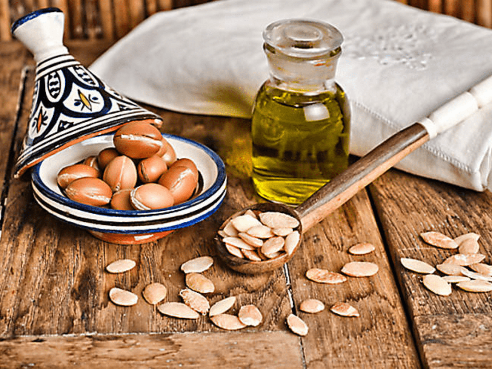

Projet 1 : Analyse Marketing - Marché de l'Argan
Étude stratégique sur la valorisation des produits du terroir marocain à l'échelle internationale. Ce projet analyse les circuits de distribution et propose des leviers de croissance numériques pour moderniser le secteur de l'huile d'argan.
Lire plus